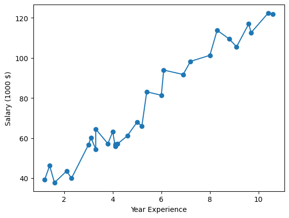
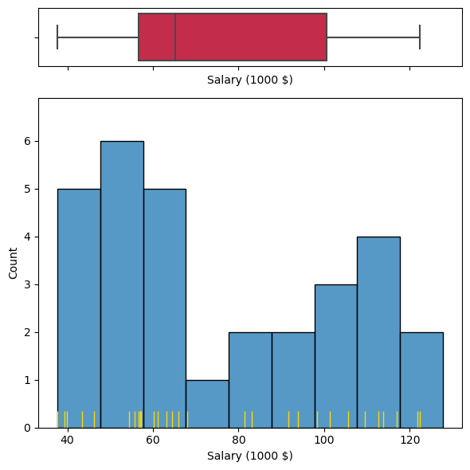
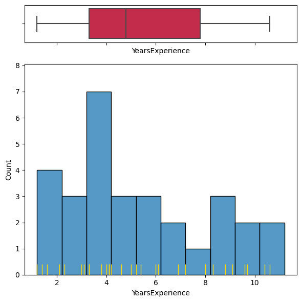
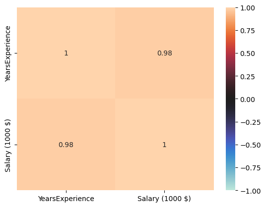
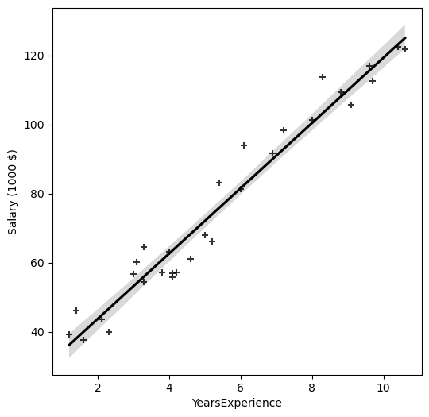
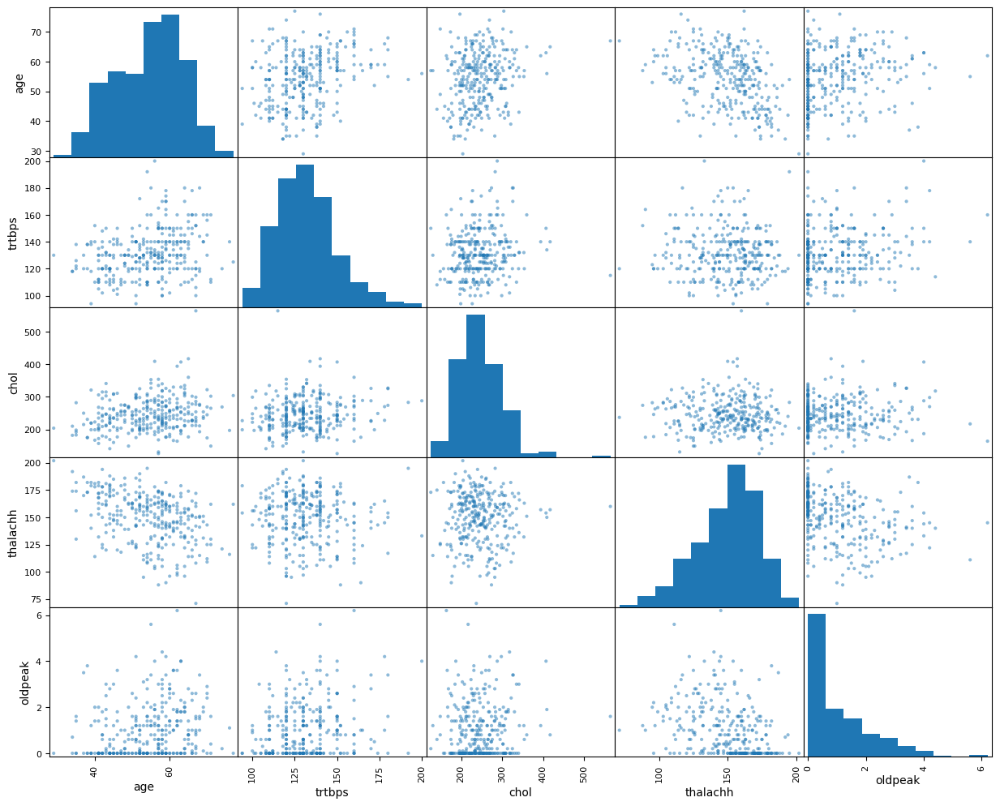
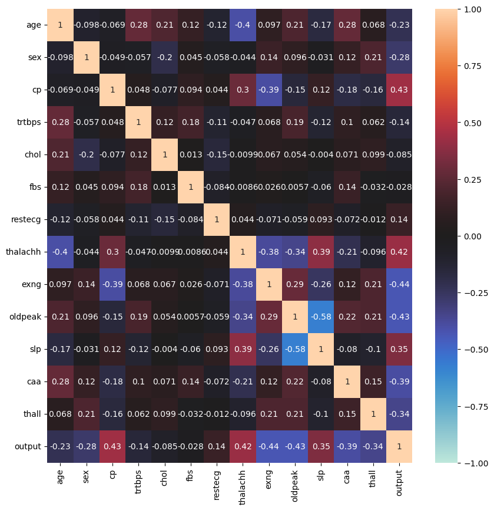
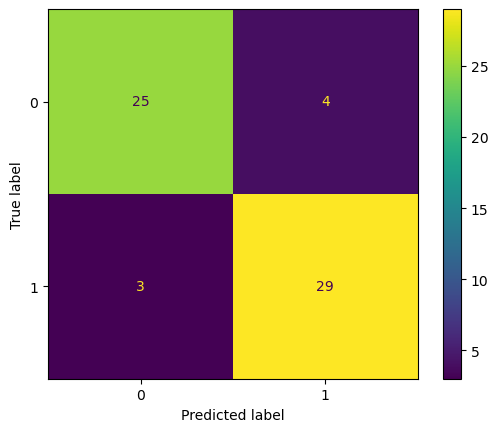
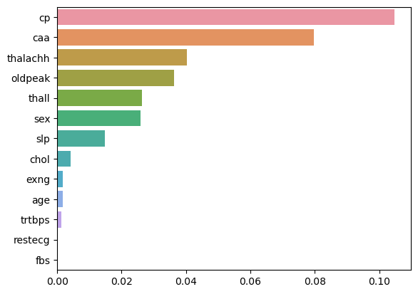

import pandas as pd
import numpy as np
import matplotlib.pyplot as plt
import seaborn as sns
%matplotlib inlineWeek 03(End to End Machine Learning)
Kembali ke Sains Data
Regression
Import Library
import library yang dibutuhkan terlebih dahulu untuk pengolahan dan visualisasi data.
Data Observation
Upload dataset yang akan digunakan dan observasi click disini
salary = pd.read_csv('Salary_dataset.csv')
salary| Unnamed: 0 | YearsExperience | Salary | |
|---|---|---|---|
| 0 | 0 | 1.2 | 39344.0 |
| 1 | 1 | 1.4 | 46206.0 |
| 2 | 2 | 1.6 | 37732.0 |
| 3 | 3 | 2.1 | 43526.0 |
| 4 | 4 | 2.3 | 39892.0 |
| 5 | 5 | 3.0 | 56643.0 |
| 6 | 6 | 3.1 | 60151.0 |
| 7 | 7 | 3.3 | 54446.0 |
| 8 | 8 | 3.3 | 64446.0 |
| 9 | 9 | 3.8 | 57190.0 |
| 10 | 10 | 4.0 | 63219.0 |
| 11 | 11 | 4.1 | 55795.0 |
| 12 | 12 | 4.1 | 56958.0 |
| 13 | 13 | 4.2 | 57082.0 |
| 14 | 14 | 4.6 | 61112.0 |
| 15 | 15 | 5.0 | 67939.0 |
| 16 | 16 | 5.2 | 66030.0 |
| 17 | 17 | 5.4 | 83089.0 |
| 18 | 18 | 6.0 | 81364.0 |
| 19 | 19 | 6.1 | 93941.0 |
| 20 | 20 | 6.9 | 91739.0 |
| 21 | 21 | 7.2 | 98274.0 |
| 22 | 22 | 8.0 | 101303.0 |
| 23 | 23 | 8.3 | 113813.0 |
| 24 | 24 | 8.8 | 109432.0 |
| 25 | 25 | 9.1 | 105583.0 |
| 26 | 26 | 9.6 | 116970.0 |
| 27 | 27 | 9.7 | 112636.0 |
| 28 | 28 | 10.4 | 122392.0 |
| 29 | 29 | 10.6 | 121873.0 |
salary.info()<class 'pandas.core.frame.DataFrame'>
RangeIndex: 30 entries, 0 to 29
Data columns (total 3 columns):
# Column Non-Null Count Dtype
--- ------ -------------- -----
0 Unnamed: 0 30 non-null int64
1 YearsExperience 30 non-null float64
2 Salary 30 non-null float64
dtypes: float64(2), int64(1)
memory usage: 848.0 bytesData Cleaning
Melihat jumlah data null pada dataset
salary.isna().sum()Unnamed: 0 0
YearsExperience 0
Salary 0
dtype: int64Melihat jumlah data duplikat pada dataset
salary.duplicated().sum()0Menghapus kolom ‘Unnamed :0’ dari DataFrame secara permanen
salary.drop('Unnamed: 0', axis=1, inplace=True)salary| YearsExperience | Salary | |
|---|---|---|
| 0 | 1.2 | 39344.0 |
| 1 | 1.4 | 46206.0 |
| 2 | 1.6 | 37732.0 |
| 3 | 2.1 | 43526.0 |
| 4 | 2.3 | 39892.0 |
| 5 | 3.0 | 56643.0 |
| 6 | 3.1 | 60151.0 |
| 7 | 3.3 | 54446.0 |
| 8 | 3.3 | 64446.0 |
| 9 | 3.8 | 57190.0 |
| 10 | 4.0 | 63219.0 |
| 11 | 4.1 | 55795.0 |
| 12 | 4.1 | 56958.0 |
| 13 | 4.2 | 57082.0 |
| 14 | 4.6 | 61112.0 |
| 15 | 5.0 | 67939.0 |
| 16 | 5.2 | 66030.0 |
| 17 | 5.4 | 83089.0 |
| 18 | 6.0 | 81364.0 |
| 19 | 6.1 | 93941.0 |
| 20 | 6.9 | 91739.0 |
| 21 | 7.2 | 98274.0 |
| 22 | 8.0 | 101303.0 |
| 23 | 8.3 | 113813.0 |
| 24 | 8.8 | 109432.0 |
| 25 | 9.1 | 105583.0 |
| 26 | 9.6 | 116970.0 |
| 27 | 9.7 | 112636.0 |
| 28 | 10.4 | 122392.0 |
| 29 | 10.6 | 121873.0 |
EDA
Mengubah setiap nilai di kolom Salary dan mengubah nama kolomnya di DataFrame secara permanen
salary['Salary'] = salary['Salary']/1000
salary.rename(columns={'Salary' : 'Salary (1000 $)'}, inplace=True)Melihat statistik deskriptif dari DataFrame
salary.describe()| YearsExperience | Salary (1000 $) | |
|---|---|---|
| count | 30.000000 | 30.00000 |
| mean | 5.413333 | 76.00400 |
| std | 2.837888 | 27.41443 |
| min | 1.200000 | 37.73200 |
| 25% | 3.300000 | 56.72175 |
| 50% | 4.800000 | 65.23800 |
| 75% | 7.800000 | 100.54575 |
| max | 10.600000 | 122.39200 |
plt.scatter(salary['YearsExperience'],salary['Salary (1000 $)'])
plt.plot(salary['YearsExperience'],salary['Salary (1000 $)'])
plt.xlabel('Year Experience')
plt.ylabel('Salary (1000 $)')
plt.show()
fig, (ax_box, ax_hist) = plt.subplots(2, 1, figsize=(6, 6), sharex='col',
gridspec_kw={"height_ratios": (.15, .85)})
sns.boxplot(data=salary, x='Salary (1000 $)', ax=ax_box, color='crimson')
sns.histplot(data=salary, x='Salary (1000 $)', ax=ax_hist, binwidth=10.)
sns.rugplot(data=salary, x='Salary (1000 $)', ax=ax_hist, height=0.05, color='gold', lw=2.)
plt.tight_layout()
fig, (ax_box, ax_hist) = plt.subplots(2, 1, figsize=(6, 6), sharex='col',
gridspec_kw={"height_ratios": (.15, .85)})
sns.boxplot(data=salary, x='YearsExperience', ax=ax_box, color='crimson')
sns.histplot(data=salary, x='YearsExperience', ax=ax_hist, binwidth=1.)
sns.rugplot(data=salary, x='YearsExperience', ax=ax_hist, height=0.05, color='gold', lw=2.)
plt.tight_layout()
corr = salary.corr()
sns.heatmap(corr, vmin=-1, center=0, vmax=1, annot=True)
plt.show()
plt.subplots(figsize=(6,6))
sns.regplot(data = salary, x='YearsExperience', y='Salary (1000 $)', color='k', marker='+')
plt.show()
Feature Engineering
Karena pada dataset ini, fitur yang ada hanya 2, tidak ada masalah dan data sudah rapi, maka untuk step feature engineering akan skip dan lanjut ke tahap modelling.
Modelling
X = salary[['YearsExperience']]
y = salary[['Salary (1000 $)']]X| YearsExperience | |
|---|---|
| 0 | 1.2 |
| 1 | 1.4 |
| 2 | 1.6 |
| 3 | 2.1 |
| 4 | 2.3 |
| 5 | 3.0 |
| 6 | 3.1 |
| 7 | 3.3 |
| 8 | 3.3 |
| 9 | 3.8 |
| 10 | 4.0 |
| 11 | 4.1 |
| 12 | 4.1 |
| 13 | 4.2 |
| 14 | 4.6 |
| 15 | 5.0 |
| 16 | 5.2 |
| 17 | 5.4 |
| 18 | 6.0 |
| 19 | 6.1 |
| 20 | 6.9 |
| 21 | 7.2 |
| 22 | 8.0 |
| 23 | 8.3 |
| 24 | 8.8 |
| 25 | 9.1 |
| 26 | 9.6 |
| 27 | 9.7 |
| 28 | 10.4 |
| 29 | 10.6 |
y| Salary (1000 $) | |
|---|---|
| 0 | 39.344 |
| 1 | 46.206 |
| 2 | 37.732 |
| 3 | 43.526 |
| 4 | 39.892 |
| 5 | 56.643 |
| 6 | 60.151 |
| 7 | 54.446 |
| 8 | 64.446 |
| 9 | 57.190 |
| 10 | 63.219 |
| 11 | 55.795 |
| 12 | 56.958 |
| 13 | 57.082 |
| 14 | 61.112 |
| 15 | 67.939 |
| 16 | 66.030 |
| 17 | 83.089 |
| 18 | 81.364 |
| 19 | 93.941 |
| 20 | 91.739 |
| 21 | 98.274 |
| 22 | 101.303 |
| 23 | 113.813 |
| 24 | 109.432 |
| 25 | 105.583 |
| 26 | 116.970 |
| 27 | 112.636 |
| 28 | 122.392 |
| 29 | 121.873 |
Split dataset menjadi data train dan data test dengan komposisi pembagian yang sering digunakan
from sklearn.model_selection import train_test_split
X_train, X_test, y_train, y_test = train_test_split(X.values, y.values, test_size=0.2, random_state=42)
X_train.shape, X_test.shape, y_train.shape, y_test.shape((24, 1), (6, 1), (24, 1), (6, 1))Import terlebih dahulu package yang akan digunakan untuk modelling
from sklearn.linear_model import LinearRegression
lr = LinearRegression()
lr.fit(X_train,y_train)LinearRegression()In a Jupyter environment, please rerun this cell to show the HTML representation or trust the notebook.
On GitHub, the HTML representation is unable to render, please try loading this page with nbviewer.org.
LinearRegression()
y_pred = lr.predict(X_test)from sklearn.metrics import mean_squared_error, r2_score
print(mean_squared_error(y_pred,y_test))
print(r2_score(y_pred,y_test))49.830096855908344
0.8961838737587329

Dimana:
\(n\) : jumlah data
\(Y_i\) : nilai actual
\(\hat{Y}_{i}\): nilai predict
\(RSS\) : sum of squared residuals
\(TSS\) : total sum of squares
print(np.concatenate((y_pred.reshape(len(y_pred),1), y_test.reshape(len(y_test),1)),1))[[115.79121011 112.636 ]
[ 71.49927809 67.939 ]
[102.59786866 113.813 ]
[ 75.26880422 83.089 ]
[ 55.47879205 64.446 ]
[ 60.19069971 57.19 ]]Classification
Import Library
from sklearn.preprocessing import StandardScaler
from sklearn.model_selection import cross_val_score
from sklearn.model_selection import StratifiedKFold
from sklearn.model_selection import GridSearchCV
from sklearn.model_selection import train_test_split
from sklearn.metrics import f1_score
from sklearn.linear_model import LogisticRegression
from sklearn.tree import DecisionTreeClassifier
from sklearn.svm import SVC
from sklearn.ensemble import RandomForestClassifierData Observation
heart = pd.read_csv('heart.csv')
heart| age | sex | cp | trtbps | chol | fbs | restecg | thalachh | exng | oldpeak | slp | caa | thall | output | |
|---|---|---|---|---|---|---|---|---|---|---|---|---|---|---|
| 0 | 63 | 1 | 3 | 145 | 233 | 1 | 0 | 150 | 0 | 2.3 | 0 | 0 | 1 | 1 |
| 1 | 37 | 1 | 2 | 130 | 250 | 0 | 1 | 187 | 0 | 3.5 | 0 | 0 | 2 | 1 |
| 2 | 41 | 0 | 1 | 130 | 204 | 0 | 0 | 172 | 0 | 1.4 | 2 | 0 | 2 | 1 |
| 3 | 56 | 1 | 1 | 120 | 236 | 0 | 1 | 178 | 0 | 0.8 | 2 | 0 | 2 | 1 |
| 4 | 57 | 0 | 0 | 120 | 354 | 0 | 1 | 163 | 1 | 0.6 | 2 | 0 | 2 | 1 |
| ... | ... | ... | ... | ... | ... | ... | ... | ... | ... | ... | ... | ... | ... | ... |
| 298 | 57 | 0 | 0 | 140 | 241 | 0 | 1 | 123 | 1 | 0.2 | 1 | 0 | 3 | 0 |
| 299 | 45 | 1 | 3 | 110 | 264 | 0 | 1 | 132 | 0 | 1.2 | 1 | 0 | 3 | 0 |
| 300 | 68 | 1 | 0 | 144 | 193 | 1 | 1 | 141 | 0 | 3.4 | 1 | 2 | 3 | 0 |
| 301 | 57 | 1 | 0 | 130 | 131 | 0 | 1 | 115 | 1 | 1.2 | 1 | 1 | 3 | 0 |
| 302 | 57 | 0 | 1 | 130 | 236 | 0 | 0 | 174 | 0 | 0.0 | 1 | 1 | 2 | 0 |
303 rows × 14 columns
# Membaca .txt tentang kolom - kolom dataset yang diberikan pada soal
with open('about dataset.txt', 'r') as f:
print(f.read())About datasets
1. age - age in years
2. sex - sex (1 = male; 0 = female)
3. cp - chest pain type (1 = typical angina; 2 = atypical angina; 3 = non-anginal pain; 0 = asymptomatic)
4. trestbps - resting blood pressure (in mm Hg on admission to the hospital)
5. chol - serum cholestoral in mg/dl
6. fbs - fasting blood sugar > 120 mg/dl (1 = true; 0 = false)
7. restecg - resting electrocardiographic results (1 = normal; 2 = having ST-T wave abnormality; 0 = hypertrophy)
8. thalach - maximum heart rate achieved
9. exang - exercise induced angina (1 = yes; 0 = no)
10. oldpeak - ST depression induced by exercise relative to rest
11. slope - the slope of the peak exercise ST segment (2 = upsloping; 1 = flat; 0 = downsloping)
12. ca - number of major vessels (0-3) colored by flourosopy
13. thal - 2 = normal; 1 = fixed defect; 3 = reversable defect
14. output - the predicted attribute - diagnosis of heart disease (0 = less chance of heart attack, 1 = higher chance of heart attack)
heart.info()<class 'pandas.core.frame.DataFrame'>
RangeIndex: 303 entries, 0 to 302
Data columns (total 14 columns):
# Column Non-Null Count Dtype
--- ------ -------------- -----
0 age 303 non-null int64
1 sex 303 non-null int64
2 cp 303 non-null int64
3 trtbps 303 non-null int64
4 chol 303 non-null int64
5 fbs 303 non-null int64
6 restecg 303 non-null int64
7 thalachh 303 non-null int64
8 exng 303 non-null int64
9 oldpeak 303 non-null float64
10 slp 303 non-null int64
11 caa 303 non-null int64
12 thall 303 non-null int64
13 output 303 non-null int64
dtypes: float64(1), int64(13)
memory usage: 33.3 KBheart.output.value_counts()1 165
0 138
Name: output, dtype: int64EDA
heart.describe()| age | sex | cp | trtbps | chol | fbs | restecg | thalachh | exng | oldpeak | slp | caa | thall | output | |
|---|---|---|---|---|---|---|---|---|---|---|---|---|---|---|
| count | 303.000000 | 303.000000 | 303.000000 | 303.000000 | 303.000000 | 303.000000 | 303.000000 | 303.000000 | 303.000000 | 303.000000 | 303.000000 | 303.000000 | 303.000000 | 303.000000 |
| mean | 54.366337 | 0.683168 | 0.966997 | 131.623762 | 246.264026 | 0.148515 | 0.528053 | 149.646865 | 0.326733 | 1.039604 | 1.399340 | 0.729373 | 2.313531 | 0.544554 |
| std | 9.082101 | 0.466011 | 1.032052 | 17.538143 | 51.830751 | 0.356198 | 0.525860 | 22.905161 | 0.469794 | 1.161075 | 0.616226 | 1.022606 | 0.612277 | 0.498835 |
| min | 29.000000 | 0.000000 | 0.000000 | 94.000000 | 126.000000 | 0.000000 | 0.000000 | 71.000000 | 0.000000 | 0.000000 | 0.000000 | 0.000000 | 0.000000 | 0.000000 |
| 25% | 47.500000 | 0.000000 | 0.000000 | 120.000000 | 211.000000 | 0.000000 | 0.000000 | 133.500000 | 0.000000 | 0.000000 | 1.000000 | 0.000000 | 2.000000 | 0.000000 |
| 50% | 55.000000 | 1.000000 | 1.000000 | 130.000000 | 240.000000 | 0.000000 | 1.000000 | 153.000000 | 0.000000 | 0.800000 | 1.000000 | 0.000000 | 2.000000 | 1.000000 |
| 75% | 61.000000 | 1.000000 | 2.000000 | 140.000000 | 274.500000 | 0.000000 | 1.000000 | 166.000000 | 1.000000 | 1.600000 | 2.000000 | 1.000000 | 3.000000 | 1.000000 |
| max | 77.000000 | 1.000000 | 3.000000 | 200.000000 | 564.000000 | 1.000000 | 2.000000 | 202.000000 | 1.000000 | 6.200000 | 2.000000 | 4.000000 | 3.000000 | 1.000000 |
pd.plotting.scatter_matrix(heart[['age', 'trtbps', 'chol', 'thalachh', 'oldpeak']], figsize=(15,12)) # plot data yang numerik dan kontinu
plt.show()
Plot diatas saya ingin melihat korelasi secara kasar antara fitur - fitur yang numerik dan kontinu, melalui scatter plot, serta range nilai datanya melalui histogramnya.
Melalui scatter plot dapat kita lihat bahwa kita belum bisa menyimpulkan korelasi antara fitur - fitur, karena persebarannya sebagian besar sangat acak. Melalui histogram dapat dilihat bahwa range nilainya cukup berjauhan (oldpeak 0 sampai 6, sedangkan chol 100 sampai 500+), sehingga perlu dilakukan standarisasi pada data numerik nantinya dengan StandardScaler
corr = heart.corr()
plt.subplots(figsize=(10,10))
sns.heatmap(corr, vmin=-1, center=0, vmax=1, annot=True)
plt.show()
Data Preprocessing
X = heart.drop('output',axis=1).copy()
y = heart.iloc[:,[-1]]X| age | sex | cp | trtbps | chol | fbs | restecg | thalachh | exng | oldpeak | slp | caa | thall | |
|---|---|---|---|---|---|---|---|---|---|---|---|---|---|
| 0 | 63 | 1 | 3 | 145 | 233 | 1 | 0 | 150 | 0 | 2.3 | 0 | 0 | 1 |
| 1 | 37 | 1 | 2 | 130 | 250 | 0 | 1 | 187 | 0 | 3.5 | 0 | 0 | 2 |
| 2 | 41 | 0 | 1 | 130 | 204 | 0 | 0 | 172 | 0 | 1.4 | 2 | 0 | 2 |
| 3 | 56 | 1 | 1 | 120 | 236 | 0 | 1 | 178 | 0 | 0.8 | 2 | 0 | 2 |
| 4 | 57 | 0 | 0 | 120 | 354 | 0 | 1 | 163 | 1 | 0.6 | 2 | 0 | 2 |
| ... | ... | ... | ... | ... | ... | ... | ... | ... | ... | ... | ... | ... | ... |
| 298 | 57 | 0 | 0 | 140 | 241 | 0 | 1 | 123 | 1 | 0.2 | 1 | 0 | 3 |
| 299 | 45 | 1 | 3 | 110 | 264 | 0 | 1 | 132 | 0 | 1.2 | 1 | 0 | 3 |
| 300 | 68 | 1 | 0 | 144 | 193 | 1 | 1 | 141 | 0 | 3.4 | 1 | 2 | 3 |
| 301 | 57 | 1 | 0 | 130 | 131 | 0 | 1 | 115 | 1 | 1.2 | 1 | 1 | 3 |
| 302 | 57 | 0 | 1 | 130 | 236 | 0 | 0 | 174 | 0 | 0.0 | 1 | 1 | 2 |
303 rows × 13 columns
y| output | |
|---|---|
| 0 | 1 |
| 1 | 1 |
| 2 | 1 |
| 3 | 1 |
| 4 | 1 |
| ... | ... |
| 298 | 0 |
| 299 | 0 |
| 300 | 0 |
| 301 | 0 |
| 302 | 0 |
303 rows × 1 columns
X_train, X_test, y_train, y_test = train_test_split(X, y, test_size=0.2, random_state=42)heart.columnsIndex(['age', 'sex', 'cp', 'trtbps', 'chol', 'fbs', 'restecg', 'thalachh',
'exng', 'oldpeak', 'slp', 'caa', 'thall', 'output'],
dtype='object')sc = StandardScaler()
col = ['age', 'trtbps', 'chol', 'thalachh', 'oldpeak']
X_train.loc[:,col] = sc.fit_transform(X_train.loc[:,col])X_train| age | sex | cp | trtbps | chol | fbs | restecg | thalachh | exng | oldpeak | slp | caa | thall | |
|---|---|---|---|---|---|---|---|---|---|---|---|---|---|
| 132 | -1.356798 | 1 | 1 | -0.616856 | 0.914034 | 0 | 1 | 0.532781 | 0 | -0.920864 | 2 | 0 | 2 |
| 202 | 0.385086 | 1 | 0 | 1.169491 | 0.439527 | 0 | 0 | -1.753582 | 1 | -0.193787 | 2 | 0 | 3 |
| 196 | -0.921327 | 1 | 2 | 1.169491 | -0.300704 | 0 | 1 | -0.139679 | 0 | 2.350982 | 1 | 0 | 2 |
| 75 | 0.058483 | 0 | 1 | 0.276318 | 0.059921 | 0 | 0 | 0.487950 | 0 | 0.351521 | 1 | 0 | 2 |
| 176 | 0.602822 | 1 | 0 | -0.795490 | -0.319684 | 1 | 1 | 0.443119 | 1 | 0.351521 | 2 | 2 | 3 |
| ... | ... | ... | ... | ... | ... | ... | ... | ... | ... | ... | ... | ... | ... |
| 188 | -0.485856 | 1 | 2 | 0.574042 | -0.262744 | 0 | 1 | 0.577611 | 0 | -0.375556 | 1 | 1 | 3 |
| 71 | -0.376988 | 1 | 2 | -2.165023 | -0.376625 | 0 | 1 | 0.174136 | 1 | -0.920864 | 2 | 1 | 3 |
| 106 | 1.582631 | 1 | 3 | 1.764940 | -0.243763 | 1 | 0 | -0.856969 | 0 | -0.829979 | 1 | 1 | 2 |
| 270 | -0.921327 | 1 | 0 | -0.616856 | 0.040941 | 0 | 0 | -0.274171 | 0 | -0.193787 | 2 | 0 | 3 |
| 102 | 0.929425 | 0 | 1 | 0.574042 | -0.983994 | 0 | 1 | 1.294902 | 0 | -0.920864 | 2 | 2 | 2 |
242 rows × 13 columns
X_test.loc[:,col] = sc.transform(X_test.loc[:,col])
X_test| age | sex | cp | trtbps | chol | fbs | restecg | thalachh | exng | oldpeak | slp | caa | thall | |
|---|---|---|---|---|---|---|---|---|---|---|---|---|---|
| 179 | 0.276218 | 1 | 0 | 1.169491 | 0.553408 | 0 | 0 | -1.708752 | 1 | -0.375556 | 1 | 1 | 1 |
| 228 | 0.493954 | 1 | 3 | 2.360389 | 0.781172 | 0 | 0 | 0.398289 | 0 | -0.739095 | 1 | 0 | 3 |
| 111 | 0.276218 | 1 | 2 | 1.169491 | -2.293633 | 1 | 1 | 1.025918 | 0 | -0.739095 | 2 | 1 | 3 |
| 246 | 0.167350 | 0 | 0 | 0.216773 | 3.077785 | 0 | 0 | -0.005187 | 1 | 0.805944 | 1 | 2 | 3 |
| 60 | 1.800367 | 0 | 2 | -1.212304 | 0.344625 | 1 | 0 | -0.901800 | 0 | -0.920864 | 2 | 1 | 2 |
| ... | ... | ... | ... | ... | ... | ... | ... | ... | ... | ... | ... | ... | ... |
| 249 | 1.582631 | 1 | 2 | 0.574042 | 0.135842 | 0 | 0 | -0.184510 | 0 | 0.896828 | 1 | 3 | 3 |
| 104 | -0.485856 | 1 | 2 | -0.080952 | -0.965014 | 0 | 1 | 0.577611 | 0 | -0.920864 | 2 | 0 | 2 |
| 300 | 1.473764 | 1 | 0 | 0.812222 | -1.021955 | 1 | 1 | -0.408663 | 0 | 2.169213 | 1 | 2 | 3 |
| 193 | 0.602822 | 1 | 0 | 0.871767 | 0.667290 | 0 | 0 | -0.363832 | 1 | 1.623905 | 1 | 2 | 3 |
| 184 | -0.485856 | 1 | 0 | 1.169491 | -0.072941 | 0 | 0 | -0.991461 | 0 | 1.442136 | 1 | 0 | 3 |
61 rows × 13 columns
Model Selection
log_regr = LogisticRegression()
svc = SVC()
dt = DecisionTreeClassifier()
rf = RandomForestClassifier()kfold = StratifiedKFold(n_splits=5, shuffle=True, random_state=42)
# melakukan cross validation pada masing-masing metode
lr_score = cross_val_score(log_regr, X_train, y_train, cv=kfold, scoring='f1').mean()
svc_score = cross_val_score(svc, X_train, y_train, cv=kfold, scoring='f1').mean()
dt_score = cross_val_score(dt, X_train, y_train, cv=kfold, scoring='f1').mean()
rf_score = cross_val_score(rf, X_train, y_train, cv=kfold, scoring='f1').mean()for i in [lr_score, svc_score, dt_score, rf_score]:
print(i)0.838821143443002
0.8530945548368415
0.7278904812545365
0.8365591551305837Hyperparameter Tuning
params = {'C':[0.01,0.05,0.1,0.7,0.5,1,5,10,50,100], # hyperparameter yang akan dievaluasi untuk SVC
'kernel':['poly','rbf']}
grid_search = GridSearchCV(svc, params, cv=kfold, scoring='f1')
grid_search.fit(X_train,y_train)grid_search.best_params_, grid_search.cv_results_['mean_test_score'].max()({'C': 0.7, 'kernel': 'rbf'}, 0.8596614105205573)model = grid_search.best_estimator_
model.fit(X_train,y_train)C:\Users\user\anaconda3\lib\site-packages\sklearn\utils\validation.py:1143: DataConversionWarning: A column-vector y was passed when a 1d array was expected. Please change the shape of y to (n_samples, ), for example using ravel().
y = column_or_1d(y, warn=True)SVC(C=0.7)In a Jupyter environment, please rerun this cell to show the HTML representation or trust the notebook.
On GitHub, the HTML representation is unable to render, please try loading this page with nbviewer.org.
SVC(C=0.7)
y_pred = model.predict(X_test)
y_predarray([0, 1, 1, 0, 1, 1, 1, 0, 0, 1, 1, 0, 1, 0, 1, 1, 1, 0, 0, 0, 1, 0,
0, 1, 1, 1, 1, 1, 0, 1, 0, 0, 0, 0, 1, 0, 1, 1, 1, 1, 1, 1, 1, 1,
1, 0, 1, 1, 0, 0, 0, 0, 1, 1, 0, 0, 0, 1, 0, 0, 0], dtype=int64)Model Evaluation
f1_score(y_test,y_pred)0.8923076923076922from sklearn.metrics import confusion_matrix, ConfusionMatrixDisplay, classification_report
def evaluation_parametrics(name,y_val, y_pred):
print("\n------------------------{}------------------------\n".format(name))
cm_test = confusion_matrix(y_val, y_pred)
t1 = ConfusionMatrixDisplay(cm_test)
print("\nClassification Report for Data Test\n")
print(classification_report(y_val, y_pred))
print("--------------------------------------------------------------------------")
t1.plot()evaluation_parametrics("Machine Learning - Classification", y_test, y_pred)
------------------------Machine Learning - Classification------------------------
Classification Report for Data Test
precision recall f1-score support
0 0.89 0.86 0.88 29
1 0.88 0.91 0.89 32
accuracy 0.89 61
macro avg 0.89 0.88 0.88 61
weighted avg 0.89 0.89 0.89 61
--------------------------------------------------------------------------

Perbandingan data actual dan data prediksi
print(np.concatenate((y_test.values.reshape(len(y_test),1),y_pred.reshape(len(y_pred),1)),1))[[0 0]
[0 1]
[1 1]
[0 0]
[1 1]
[1 1]
[1 1]
[0 0]
[0 0]
[1 1]
[1 1]
[1 0]
[1 1]
[0 0]
[1 1]
[1 1]
[1 1]
[0 0]
[0 0]
[0 0]
[1 1]
[0 0]
[0 0]
[1 1]
[1 1]
[0 1]
[0 1]
[1 1]
[0 0]
[1 1]
[1 0]
[0 0]
[0 0]
[1 0]
[1 1]
[0 0]
[1 1]
[1 1]
[1 1]
[1 1]
[1 1]
[1 1]
[1 1]
[1 1]
[1 1]
[0 0]
[0 1]
[1 1]
[0 0]
[0 0]
[0 0]
[0 0]
[1 1]
[1 1]
[0 0]
[0 0]
[0 0]
[1 1]
[0 0]
[0 0]
[0 0]]Features Important
from sklearn.inspection import permutation_importance
result = permutation_importance(model, X_test, y_test, n_repeats=10,
scoring='f1', random_state=42)result_sorted = []
columns_sorted = []
for res, col in sorted(zip(result.importances_mean, X_test.columns.values), reverse=True):
result_sorted.append(res)
columns_sorted.append(col)
sns.barplot(x = result_sorted, y = columns_sorted)
plt.show()
Save Model
Simpan model ke dalam file dan model siap digunakan untuk predict
import joblib
joblib.dump(model,'model_SVC.pkl')['model_SVC.pkl']